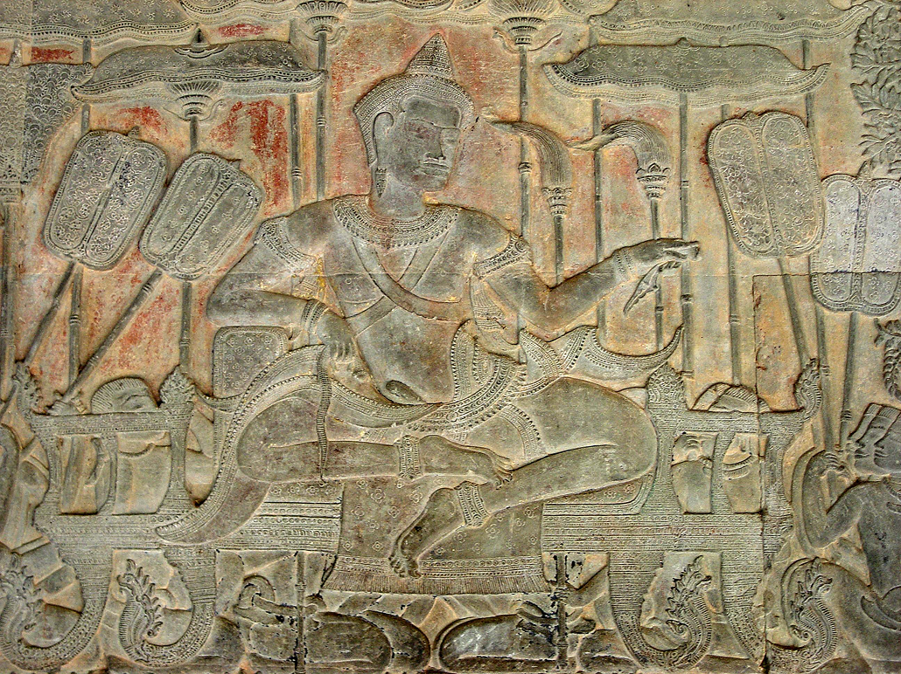
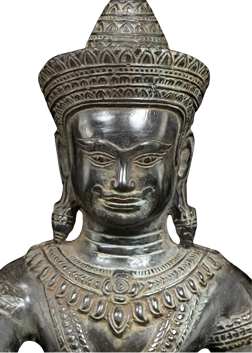
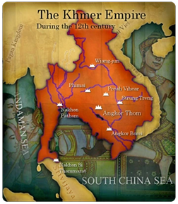
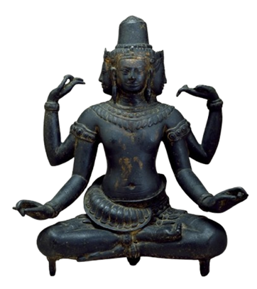
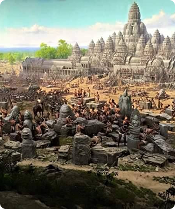
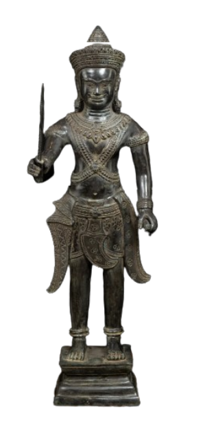
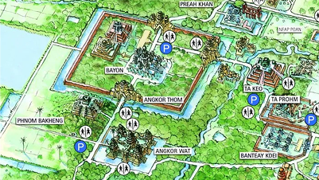
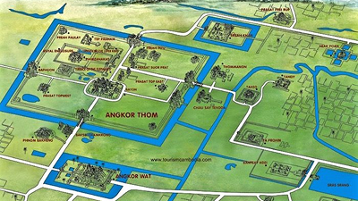
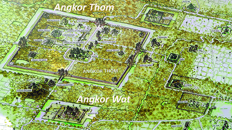

ព្រះមហាក្សត្រអ្នកកសាងប្រាសាទអង្គរវត្ត
ព្រះបាទសូរ្យវរ្ម័នទី២ គឺជាព្រះមហាក្សត្រដ៏មានឥទ្ធិពលបំផុតមួយអង្គក្នុងប្រវត្តិសាស្ត្រខ្មែរ។ ព្រះអង្គត្រូវបានគេស្គាល់ថាជា ស្ថាបនិកនៃប្រាសាទអង្គរវត្ត ដែលជាសំណង់សាសនា និងស្ថាបត្យកម្មដ៏អស្ចារ្យបំផុតរបស់អាណាចក្រខ្មែរ និងជាបេតិកភណ្ឌពិភពលោកដ៏ល្បីល្បាញរហូតមកដល់សព្វថ្ងៃ។

១. ប្រវត្តិ និងការឡើងគ្រងរាជ្យ

ព្រះបាទសូរ្យវរ្ម័នទី២ បានឡើងគ្រងរាជ្យប្រហែលនៅឆ្នាំ ១១១៣ នៃគ្រិស្តសករាជ ក្នុងអំឡុងពេលដែលអាណាចក្រខ្មែរកំពុងប្រឈមមុខនឹងភាពចលាចលផ្នែកនយោបាយ និងការប្រកួតប្រជែងអំណាចក្នុងរាជវង្ស។ មុនពេលឡើងសោយរាជ្យ ព្រះអង្គបានដឹកនាំកងទ័ពធ្វើសង្គ្រាមដើម្បីបង្រួបបង្រួមអំណាច និងយកឈ្នះគូប្រជែងជាច្រើន ដោយបង្ហាញពីព្រះចេស្តាដ៏ក្លាហាន និងសមត្ថភាពដឹកនាំដ៏ខ្ពង់ខ្ពស់របស់ព្រះអង្គ។ បន្ទាប់ពីឡើងសោយរាជ្យ ព្រះបាទសូរ្យវរ្ម័នទី២ បានខិតខំស្តារស្ថិរភាពនយោបាយ និងបង្រួបបង្រួមទឹកដីឱ្យស្ថិតក្រោមអំណាចកណ្តាលរបស់អាណាចក្រខ្មែរ។ ព្រះអង្គបានរៀបចំប្រព័ន្ធគ្រប់គ្រងរដ្ឋ បង្កើនកម្លាំងយោធា និងពង្រឹងទំនាក់ទំនងការទូតជាមួយរដ្ឋជិតខាង ដែលបានធ្វើឱ្យអាណាចក្រមានសន្តិភាព និងភាពរឹងមាំឡើងវិញ។
២. ការពង្រីកអាណាចក្រ

ក្នុងរជ្ជកាលរបស់ព្រះបាទសូរ្យវរ្ម័នទី២ អាណាចក្រខ្មែរបានឈានដល់ដំណាក់កាលនៃការពង្រីកអំណាចយ៉ាងខ្លាំងទាំងផ្នែកយោធា និងនយោបាយ។ បន្ទាប់ពីបានបង្រួបបង្រួមស្ថិរភាពផ្ទៃក្នុងរួច ព្រះអង្គបានដឹកនាំកងទ័ពធ្វើសង្គ្រាម និងពង្រីកឥទ្ធិពលទៅកាន់តំបន់ជាច្រើននៅអាស៊ីអាគ្នេយ៍។ កងទ័ពខ្មែរបានធ្វើចម្បាំងជាមួយនគរចម្ប៉ា ដែលស្ថិតនៅភាគកណ្តាលនៃប្រទេសវៀតណាមសព្វថ្ងៃ ព្រមទាំងបានពង្រីកឥទ្ធិពលទៅកាន់តំបន់មួយចំនួននៃប្រទេសឡាវ និងតំបន់ភាគខាងលិចនៃប្រទេសថៃសព្វថ្ងៃ។ ក្រៅពីការពង្រីកទឹកដី ព្រះបាទសូរ្យវរ្ម័នទី២ ក៏បានបង្កើនទំនាក់ទំនងការទូត និងការធ្វើពាណិជ្ជកម្មជាមួយរដ្ឋជិតខាងផងដែរ។ ដោយមានកងទ័ពដ៏រឹងមាំ និងការគ្រប់គ្រងដ៏មានប្រសិទ្ធភាព អាណាចក្រខ្មែរបានក្លាយជាមហាអំណាចមួយដែលមានឥទ្ធិពលយ៉ាងខ្លាំងនៅក្នុងតំបន់អាស៊ីអាគ្នេយ៍។ ភាពរុងរឿងនេះបានជំរុញឱ្យមានការរីកចម្រើនលើវិស័យសេដ្ឋកិច្ច ស្ថាបត្យកម្ម និងវប្បធម៌ ដែលបានធ្វើឱ្យអាណាចក្រខ្មែរឈានដល់ចំណុចកំពូលមួយនៃប្រវត្តិសាស្ត្ររបស់ខ្លួន។
៣. ជំនឿសាសនា

ព្រះបាទសូរ្យវរ្ម័នទី២ គឺជាព្រះមហាក្សត្រដែលមានជំនឿយ៉ាងមុតមាំលើសាសនាព្រហ្មញ្ញនិកាយព្រះវិស្ណុ។ ក្នុងជំនឿព្រហ្មញ្ញ ព្រះវិស្ណុ (ព្រះនារាយណ៍) ត្រូវបានចាត់ទុកថាជាព្រះអាទិទេពដ៏សំខាន់មួយក្នុងចំណោមព្រះត្រីមូត្រ (ព្រះព្រហ្ម ព្រះវិស្ណុ និងព្រះសិវៈ) ដែលមានតួនាទីជាអ្នកថែរក្សា និងការពារសកលលោក។ ព្រះវិស្ណុត្រូវបានគេជឿថាជាអ្នករក្សាលំនឹងរវាងអំពើល្អ និងអំពើអាក្រក់ ជាអ្នកការពារមនុស្សលោក និងជាអ្នកធានានូវសន្តិភាព និងសណ្តាប់ធ្នាប់ក្នុងចក្រវាឡ។ ដោយសារជំនឿដ៏រឹងមាំនេះ ព្រះបាទសូរ្យវរ្ម័នទី២ បានសម្រេចសាងសង់ប្រាសាទអង្គរវត្តឡើង ដើម្បីឧទ្ទិសថ្វាយព្រះវិស្ណុ ជំនួសឱ្យការឧទ្ទិសថ្វាយព្រះសិវៈដូចដែលព្រះមហាក្សត្រខ្មែរមុនៗភាគច្រើនបានអនុវត្ត។ ប្រាសាទអង្គរវត្តត្រូវបានរចនាឡើងដោយផ្អែកលើទស្សនៈសាសនាព្រហ្មញ្ញ ដែលតំណាងឱ្យភ្នំព្រះសុមេរុ ជាទីស្ថិតរបស់ទេវតាទាំងឡាយ និងជាមជ្ឈមណ្ឌលនៃចក្រវាឡតាមជំនឿបុរាណ។
៤. ការកសាងប្រាសាទអង្គរវត្ត

ការកសាងប្រាសាទអង្គរវត្តត្រូវបានចាប់ផ្តើមនៅដើមសតវត្សទី១២ ក្នុងរជ្ជកាលព្រះបាទសូរ្យវរ្ម័នទី២ ដោយមានគោលបំណងធ្វើជាប្រាសាទឧទ្ទិសថ្វាយព្រះវិស្ណុ (ព្រះនារាយណ៍) និងជានិមិត្តរូបនៃភាពរុងរឿង និងអំណាចរបស់អាណាចក្រខ្មែរ។ គម្រោងសំណង់ដ៏មហិមានេះត្រូវការកម្លាំងកម្មករ និងជាងសិប្បកម្មជាច្រើន ដោយមានកម្មកររាប់ម៉ឺននាក់ ជាងចម្លាក់ និងជាងសំណង់រាប់ពាន់នាក់ ដែលបានធ្វើការជាបន្តបន្ទាប់អស់រយៈពេលជាច្រើនទសវត្សរ៍។ ក្នុងការសាងសង់នេះ គេបានប្រើប្រាស់ថ្មភក់រាប់លានដុំ ដែលភាគច្រើនត្រូវបានកាត់ និងដឹកជញ្ជូនពីភ្នំគូលែន ដែលមានទីតាំងស្ថិតនៅចម្ងាយប្រមាណ ៥០ គីឡូម៉ែត្រភាគឦសាននៃតំបន់អង្គរ។ ថ្មទាំងនេះត្រូវបានដឹកជញ្ជូនតាមបណ្តាញប្រឡាយ និងទន្លេ ដោយប្រើក្បូន និងមធ្យោបាយផ្សេងៗ ដែលបង្ហាញពីសមត្ថភាពវិស្វកម្ម និងការរៀបចំធនធានដ៏អស្ចារ្យរបស់អាណាចក្រខ្មែរ។
៥. ការសោយទិវង្គត

ព្រះបាទសូរ្យវរ្ម័នទី២ បានសោយទិវង្គតនៅប្រហែលចន្លោះឆ្នាំ ១១៤៩ ដល់ ១១៥០ នៃគ្រិស្តសករាជ បន្ទាប់ពីបានសោយរាជ្យអស់រយៈពេលប្រមាណជាង ៣០ ឆ្នាំ។ ក្នុងអំឡុងរជ្ជកាលរបស់ព្រះអង្គ អាណាចក្រខ្មែរបានឈានដល់កម្រិតនៃភាពរុងរឿងខ្ពស់ទាំងផ្នែកនយោបាយ យោធា សេដ្ឋកិច្ច និងស្ថាបត្យកម្ម ដោយមានការកសាងប្រាសាទអង្គរវត្តជាស្នាដៃដ៏អស្ចារ្យបំផុតមួយនៃអរិយធម៌ខ្មែរ។ ទោះបីជាមិនមានឯកសារប្រវត្តិសាស្ត្រណាមួយបញ្ជាក់យ៉ាងច្បាស់អំពីមូលហេតុនៃការសោយទិវង្គតរបស់ព្រះអង្គក៏ដោយ ក៏អ្នកស្រាវជ្រាវមួយចំនួនបានសន្និដ្ឋានថា ព្រះអង្គប្រហែលជាសោយទិវង្គតដោយសារជរាភាព ឬក្នុងពេលដឹកនាំកងទ័ពធ្វើសង្គ្រាមនៅតំបន់នគរចម្ប៉ា (ចម្ប៉ា) ដែលស្ថិតនៅភាគកណ្តាលនៃប្រទេសវៀតណាមសព្វថ្ងៃ។ ការសោយទិវង្គតរបស់ព្រះអង្គបានធ្វើឱ្យអាណាចក្រខ្មែរជួបប្រទះនឹងការប្រែប្រួលផ្នែកនយោបាយ និងការប្រកួតប្រជែងអំណាចនៅក្នុងរាជវង្ស។
ផែនទីនៃ ប្រាសាទ


